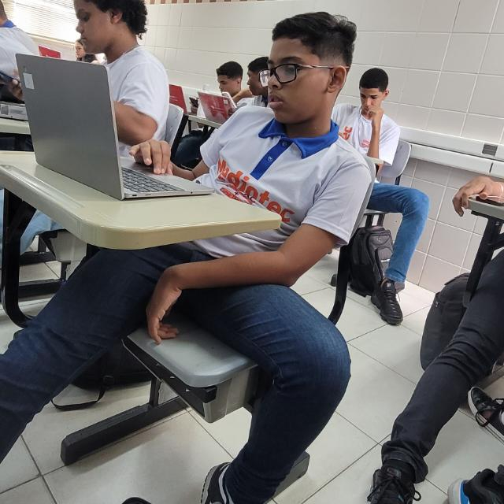

Sapinho: o temido, o odiado, o imparável
Moreno, de cabelo curto e óculos sempre no rosto, Sapinho não passa despercebido. Detestado por muitos, invejado por outros, ele segue a vida no modo turbo — e se tem algo que ele domina, é o caos.
Conhecido nas quebradas por ser um pegador profissional de veias e primas, Sapinho não perdoa árvore genealógica alheia. Onde tem parente, ele já deixou sua marca (e alguns corações partidos).
Mas não para por aí: no mundo virtual, ele é lenda. Jogador raiz de Free Fire, Sapinho coleciona abates, booyahs e inimigos que o xingam no chat — provavelmente com razão.
Carrega no peito o respeito e a malandragem de Zé Pilintra, seu guia espiritual e inspiração de vida. Sapinho anda na linha torta com fé no coração e malícia no olhar. Entre uma jogada suja e um “pegadaço”, ele solta aquele famoso:
“Namastê, mas eu não presto.”
Polêmico? Sim. Humilde? Jamais.
Sapinho vive como quer, faz o que quer, e se alguém reclamar... ele já tá pegando a prima da pessoa.